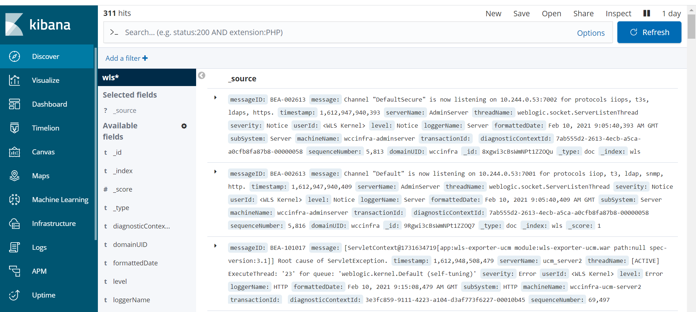

Publish logs to Elasticsearch Using Fluentd
Introduction
This page describes to how to configure a WebLogic domain to use Fluentd to send log information to Elasticsearch.
Here’s the general mechanism for how this works:
fluentd runs as a separate container in the Administration Server and Managed Server pods- The log files reside on a volume that is shared between the weblogic-server and fluentd containers
- fluentd tails the domain logs files and exports them to Elasticsearch
- A ConfigMap contains the filter and format rules for exporting log records.
Create fluentd configuration
Create a ConfigMap named fluentd-config in the namespace of the domain. The ConfigMap contains the parsing rules and Elasticsearch configuration.
Here’s an explanation of some elements defined in the ConfigMap:
- The
@type tail indicates that tail will be used to obtain updates to the log file
- The
path of the log file is obtained from the LOG_PATH environment variable that is defined in the fluentd container
- The
tag value of log records is obtained from the DOMAIN_UID environment variable that is defined in the fluentd container
- The
parse section defines how to interpret and tag each element of a log record
- The
match section contains the configuration information for connecting to Elasticsearch and defines the index name of each record to be the domainUID
Here is a sample configmap for fluentd configuration,
Click here to see sample configmap for fluentd configuration `fluentd_configmap.yaml`.
apiVersion: v1
kind: ConfigMap
metadata:
labels:
weblogic.domainUID: wccinfra
weblogic.resourceVersion: domain-v2
name: fluentd-config
namespace: wccns
data:
fluentd.conf: |
<match fluent.**>
@type null
</match>
<source>
@type tail
path "#{ENV['LOG_PATH']}"
pos_file /tmp/server.log.pos
read_from_head true
tag "#{ENV['DOMAIN_UID']}"
# multiline_flush_interval 20s
<parse>
@type multiline
format_firstline /^####/
format1 /^####<(?<timestamp>(.*?))>/
format2 / <(?<level>(.*?))>/
format3 / <(?<subSystem>(.*?))>/
format4 / <(?<serverName>(.*?))>/
format5 / <(?<serverName2>(.*?))>/
format6 / <(?<threadName>(.*?))>/
format7 / <(?<info1>(.*?))>/
format8 / <(?<info2>(.*?))>/
format9 / <(?<info3>(.*?))>/
format10 / <(?<sequenceNumber>(.*?))>/
format11 / <(?<severity>(.*?))>/
format12 / <(?<messageID>(.*?))>/
format13 / <(?<message>(.*?))>/
</parse>
</source>
<match **>
@type elasticsearch
host "#{ENV['ELASTICSEARCH_HOST']}"
port "#{ENV['ELASTICSEARCH_PORT']}"
user "#{ENV['ELASTICSEARCH_USER']}"
password "#{ENV['ELASTICSEARCH_PASSWORD']}"
index_name "#{ENV['DOMAIN_UID']}"
</match>
Create the ConfigMap using the following command
$kubectl create -f fluentd_configmap.yaml
Mount fluentd configuration - Configmap as volume in the WebLogic container.
Edit the domain definition and configure a volume for the ConfigMap containing the fluentd configuration.
$kubectl edit domain -n wccns
Below sample yaml code add Configmap as volume,
volumes:
- name: weblogic-domain-storage-volume
persistentVolumeClaim:
claimName: wccinfra-domain-pvc
- configMap:
defaultMode: 420
name: fluentd-config
name: fluentd-config-volume
Add fluentd container to WebLogic Server pods
Add a “fluentd container yaml” to the domain under serverPod: section that will run fluentd in the Administration Server and Managed Server pods.
Notice the container definition:
- Defines a LOG_PATH environment variable that points to the log location of WebLogic servers.
- Defines ELASTICSEARCH_HOST, ELASTICSEARCH_PORT, ELASTICSEARCH_USER, and ELASTICSEARCH_PASSWORD environment variables.
- Has volume mounts for the fluentd-config ConfigMap and the volume containing the domain logs.
$kubectl edit domain -n wccns
Click here to see sample fluentd container yaml `fluentd container`.
containers:
- args:
- -c
- /etc/fluent.conf
env:
- name: DOMAIN_UID
valueFrom:
fieldRef:
fieldPath: metadata.labels['weblogic.domainUID']
- name: SERVER_NAME
valueFrom:
fieldRef:
fieldPath: metadata.labels['weblogic.serverName']
- name: LOG_PATH
value: /u01/oracle/user_projects/domains/logs/wccinfra/$(SERVER_NAME).log
- name: FLUENTD_CONF
value: fluentd.conf
- name: FLUENT_ELASTICSEARCH_SED_DISABLE
value: "true"
- name: ELASTICSEARCH_HOST
value: elasticsearch.default.svc.cluster.local
- name: ELASTICSEARCH_PORT
value: "9200"
- name: ELASTICSEARCH_USER
value: elastic
- name: ELASTICSEARCH_PASSWORD
value: changeme
image: fluent/fluentd-kubernetes-daemonset:v1.3.3-debian-elasticsearch-1.3
imagePullPolicy: IfNotPresent
name: fluentd
resources: {}
volumeMounts:
- mountPath: /fluentd/etc/fluentd.conf
name: fluentd-config-volume
subPath: fluentd.conf
- mountPath: /u01/oracle/user_projects
name: weblogic-domain-storage-volume
Restart WebLogic Servers
To restart the servers, edit the domain and change serverStartPolicy to NEVER for the WebLogic servers to shutdown
$kubectl edit domain -n wccns
After all the servers are shutdown edit domain again and set serverStartPolicy to IF_NEEDED for the servers to start again.
Create index pattern in Kibana
Create an index pattern “wls*” in Kibana > Management.
After the server starts, you will be able to see the log data in the Kibana dashboard,
